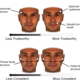

Recommended For You
- 1. Why There Will Never Be Another Einstein a month ago blogs.scientificamerican.com ScientificAmerican.com More Science
- 2. The Problem with Female Superheroes 3 months ago scientificamerican.com ScientificAmerican.com Mind & Brain
- 3.  Your Facial Bone Structure Has a Big Influence on How People See You 4 months ago scientificamerican.com ScientificAmerican.com Everyday Science
- 4. Magnetic Wormhole Created in Lab a month ago scientificamerican.com ScientificAmerican.com More Science
-
5.
 Asian Glow May Indicate Lower Pain Tolerance
9 months ago
scientificamerican.com
ScientificAmerican.com
Chemistry
Asian Glow May Indicate Lower Pain Tolerance
9 months ago
scientificamerican.com
ScientificAmerican.com
Chemistry
- 6. The Surprising Problem of Too Much Talent a year ago scientificamerican.com ScientificAmerican.com Mind & Brain
- 7. Ask the Experts: The Human Body and Mind 5 months ago books.scientificamerican.com:80 ScientificAmerican.com
- 8. These Are All The Ways Laughter Affects Your Body 3 weeks ago huffingtonpost.com Huffington Post HuffingtonPost.com (AOL) The Huffington Post News Team (sponsored) laughter